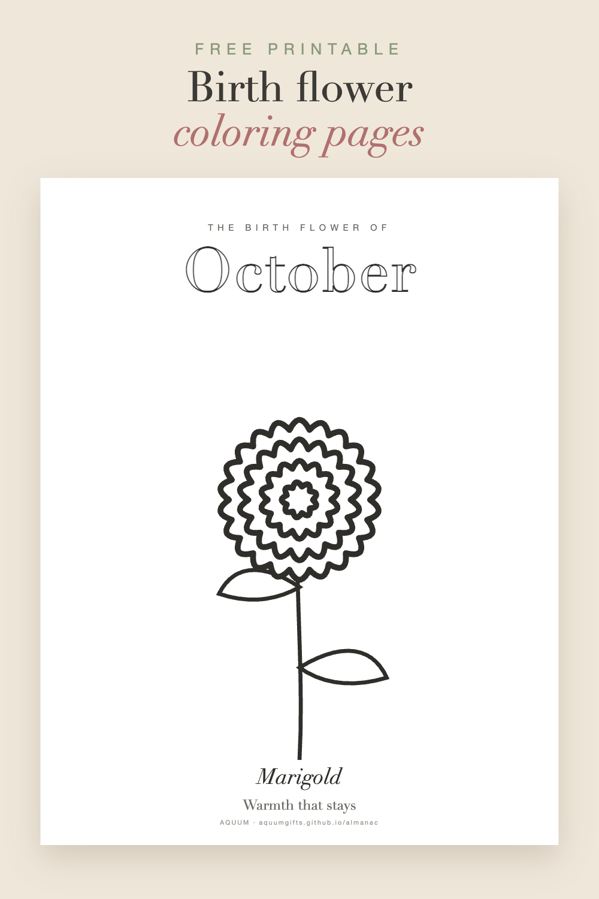

Free Birth Flower Coloring Pages: All 12 Months, Ready to Print
2026-10-01
Written by the team behind Aquum, a small birth flower gift shop. How we make money.

Twelve coloring pages, one for every birth flower, plus a final sheet with all twelve together. The lines are bold and simple, so they work for kids, for a calm evening, or for a birthday party activity.
Download the free birth flower coloring pages (PDF)
Thirteen letter-size pages (8.5 × 11 in). Each page has the month in outline letters, the flower to color, and what it means.
Prefer to keep them in your inbox? Get all our free printables on Gumroad: the coloring pages, the chart, the gift tags and the birthday cards in one place.
Bonus: the second birth flowers to color (PDF), eleven more pages with snowdrop, primrose, jonquil, sweet pea, hawthorn, honeysuckle, water lily, poppy, morning glory, cosmos and holly. Not sure what a second birth flower is? Here's the short story.
Ideas for using them
- Birthday parties: print the birthday kid's flower for every guest, or one page per guest's own month.
- Classrooms: a different flower for each month, with its meaning to read out loud. Teachers, this one's for you.
- Baby showers: guests color the baby's flower and leave it for the parents. More ideas in our baby shower guide.
- A quiet gift: color someone's flower, frame it, and write the meaning on the back.
Which flower is whose?
Find any birthday in the birth flower finder, or see all twelve on our free printable chart.
Printing tips
- Print at 100% scale, on regular paper for crayons or cardstock for markers and watercolor.
- Free for personal and classroom use. Please don't resell the file.
More free printables: gift tags and birthday cards.